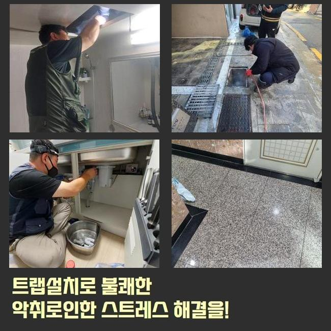
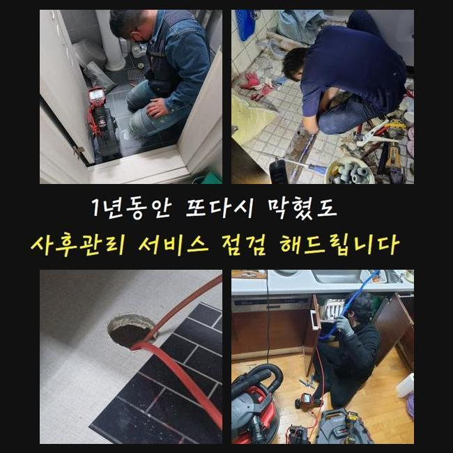
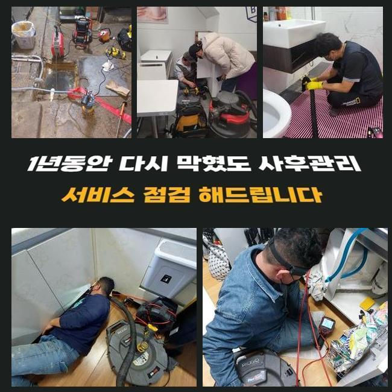
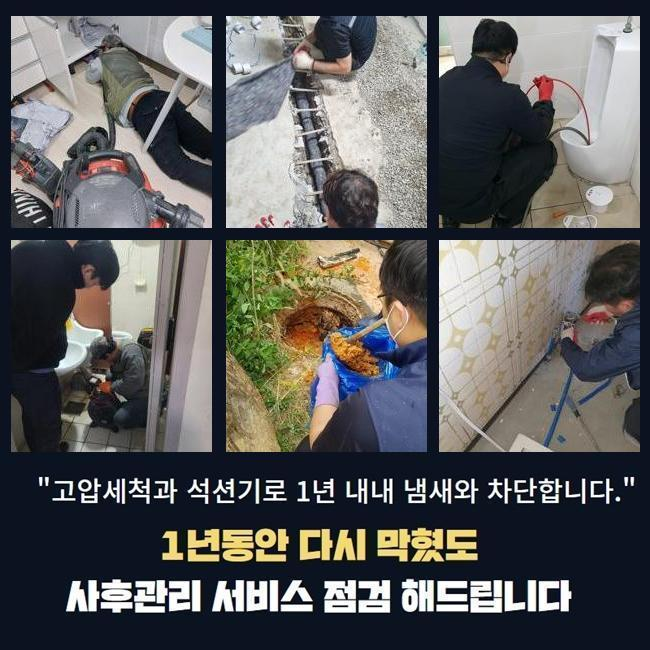
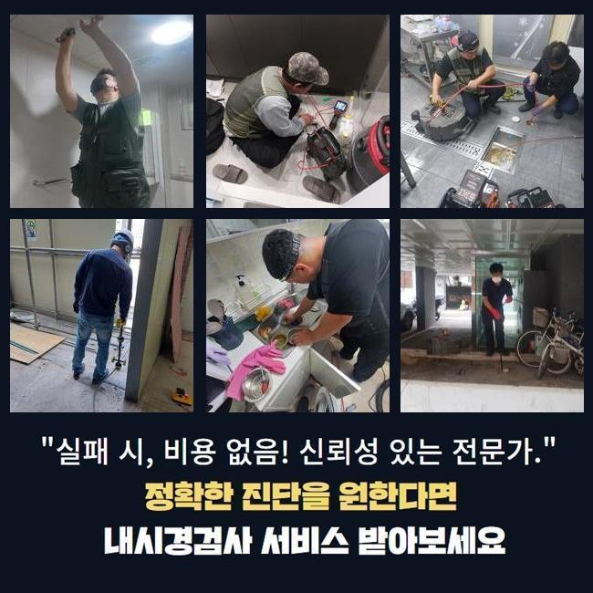

🏠 천안 성거읍씽크대배수관막힘 입장면 맨홀역류 출장수리
천안 성거읍 싱크대막힘 전문 시공 후기

📋 작업 개요
- 위치: 천안 성거읍, 성거읍, 천안
- 서비스 유형: 싱크대막힘, 하수구막힘, 배관막힘, 맨홀막힘, 역류해결, 배관청소, 고압세척
- 작업 일시: 2025. 6. 11. 23:07
- 업체명: 하수구수사대 (010-5615-2118)
🔍 문제 상황
천안 성거읍씽크대배수관막힘 입장면 맨홀역류 출장수리
최근에 한 전화를 통해 가정집의 세면대 막힘 문제가 발생했다는 연락을 받고 현장에 방문하게 되었습니다
댁내의 세면대 막힘은 단순한 불편을 넘어 위생 문제와 생활의 불편함으로 이어질 수 있어 빠른 조치가 중요한데요
특히, 이 문제가 오래 지속되면 악취나 역류가 발생해 세면대뿐만 아닌 주변의 다른 하수구쪽에 영향을 끼쳐 사용에 큰 제약을 줄 수 있습니다
공용 배관을 사용하는 건물의 경우, 세면대 막힘이 해결되지 않으면 여러 세대가 동시다발적으로 영향을 받을 수 있어 신속한 대응이 필수적입니다
현장에 도착해 고객분께서 설명해주신 문제 상황을 들으며 세면대가 막혀 물이 원활히 빠지지 않아 사용이 불편하다는 점을 확인했습니다
문제가 발생한 지 꽤 오래되어 점차 악취도 심해지고 생활 환경이 불쾌해졌다고 하는데요
이러한 막힘 문제는 특히 시간이 지날수록 상태가 악화되는 경향이 있어 초기 대처가 매우 중요하겠습니다

🔎 원인 분석
💡 전문가 진단: 정밀 진단 장비를 사용하여 슬러지의 고착 여부를 판명하고 타격/세척 작업을 실시했습니다.
💡 전문가 진단: 정밀 진단 장비를 사용하여 슬러지의 고착 여부를 판명하고 타격/세척 작업을 실시했습니다.
💡 전문가 진단: 정밀 진단 장비를 사용하여 슬러지의 고착 여부를 판명하고 타격/세척 작업을 실시했습니다.
고객분께서는 그동안 가정에서 사용하는 간단한 도구로 문제를 해결해 보려고 여러 번 시도하셨지만, 이번에는 아무리 노력해도 효과가 없어서 도움을 요청하셨습니다
자체적으로 보유한 도구를 이용해 작업을 시도하는 경우에는 일시적으로 문제가 완화되는 것처럼 보일 수 있겠지만, 배관 깊숙한 곳에 남아 있는 이물질을 제거하지는 못합니다
또한, 작업 과정에서 이물질을 깊숙한 지점에 밀어 넣게 된다면 되레 문제를 악화시킬 수 있는데요
하수구 문제의 근본적인 원인을 해결하기 위해선 관련 지식이 없는 상태에서 무분별한 방식으로 작업을 진행하는 것은 올바르지 못한 행동입니다
전문 업체의 도움을 받는 것이 바람직한 방법이라고 생각해보면 되는데요
세면대 배관을 점검한 결과, 깊은 지점에 물에 잘 녹지 않는 다양한 잔여물들이 쌓여 배수를 방해하고 있는 것이 원인이었습니다
막힌 상태를 확인한 후, 문제를 보다 정확히 파악하기 위해 내시경 카메라를 사용해 세면대 배관의 상태를 세밀히 점검했습니다
내시경 카메라는 작은 크기의 카메라를 배관 내부에 삽입하여 안쪽 깊은 곳까지 파악하는 데 도움을 줄 수 있는데요
해당 장비를 적극적으로 활용해 준다면 문제 발생 위치와 원인을 명확하게 규정함으로써 작업 효율을 크게 높일 수 있습니다

🔧 작업 과정
내시경 카메라를 이용해 전체적인 점검을 진행한 결과 배관 안쪽 깊은 부분에 하수구슬러지가 대량으로 쌓여 물길의 흐름을 방해하는 모습을 확인할 수 있었습니다
슬러지는 하수구를 오염시키는 것은 물론 배수의 흐름을 방해하는 주요 원인이라고 볼 수 있는데요
시간이 지날수록 슬러지는 단단한 형태로 굳어지게 되면서 문제를 더욱 복잡하게 만들 수 있습니다
이번현장도 마찬가지로 슬러지가 굳어 악취를 동반한 막힘을 유발한 상황이였는데요
점검을 마친 후 문제를 해결하기 위해 고속 회전 청소 장비를 활용해 배관 벽면에 단단히 붙은 잔여물을 제거하기 시작했습니다
이 장비는 배관 내의 오염물질을 빠르게 분쇄하며 유수를 원활하게 만드는 데 매우 효과적입니다
특히, 배관이 오래되었거나 구조가 복잡한 경우에는 힘 조절을 세밀하게 하여 안전하게 작업이 진행될 수 있도록 신경 썼습니다
첫 번째 단계로 배관 내부의 주요 잔여물을 분쇄하고, 추가로 흡입 장비를 사용해 파쇄된 잔여물을 안전하게 제거하는 과정을 반복하였습니다
이 작업을 통해 배수의 흐름이 조금씩 회복되는 모습을 확인할 수 있었는데요
이때에도 배관 상태를 지속적으로 점검해 필요에 따라 다시 청소 장비를 투입하여 배관을 완전히 깨끗하게 유지시켜드립니다
문제가 발생할 가능성이 높은 구간을 다시한번 집중적으로 확인하였으나 별다른 문제가 없는 모습을 확인할 수 있었는데요
샤프트 작업을 반복적으로 진행하는 것만으로도 간단하게 세면대 막힘 현상을 해결해 드릴 수 있었던 현장이었습니다
이러한 정밀한 작업 과정을 통해 처음의 막힘 상태에서 완전히 벗어날 수 있었고, 고객님과 같이 세면대 배수 상태가 크게 개선된 것을 바로 확인 하실 수 있었습니다
작업 후 내시경 카메라를 다시 사용하여 배관 내부 상태를 확인해 보았는데요, 더 이상 이물질이 보이지 않고 물의 흐름이 매우 원활해진 상태였습니다


✅ 작업 완료
세면대 막힘 문제는 배관 청소를 통해 대부분 해결할 수 있지만, 상황에 따라 반복적인 관리가 필요할 수 있습니다
이와같은 상황들은 누구나 한 번쯤 겪을 수 있는 문제이지만, 적절한 장비와 방법으로 해결할 경우 배관을 새 것처럼 관리할 수 있습니다
하수구 문제는 초기에 적절한 대응을 펼치지 못한다면 피해가 확산할 가능성이 높은 만큼 문제 발생 사실을 인지했다면 전문가에게 도움을 요청하는 것이 좋겠습니다
이러한 전문 작업을 통해 막힘 문제를 효과적으로 해결하고, 원활한 세면대 사용 환경을 제공해 드릴 수 있도록 최선을 다하고 있습니다


⚠️ 주방 싱크대 배관 막힘 예방 수칙
- ✅ 기름기가 묻은 식기나 프라이팬은 설거지 전 키친타올로 반드시 기름때를 닦아내세요.
- ✅ 주기적으로 싱크대 개수대에 뜨거운 물을 가득 받아 한 번에 내려 배관 내부 기름을 씻어내세요.
- ✅ 배수구 거름망을 미세한 필터로 사용하시고 음식물 찌꺼기가 틈으로 새어 들지 않게 관리하세요.
- ✅ 베이킹소다와 식초를 뜨거운 물과 함께 일주일에 한 번씩 부어주면 배관 살균과 막힘 예방에 좋습니다.
💡 핵심 정리
- 확실한 장비 작업(내시경 점검 및 샤프트 스케일링)으로 원인을 뿌리 뽑습니다.
- 작업 후 1년 이내에 동일한 부위 재발 시 100% 무상 A/S 서비스를 보장합니다.
- 서울 · 경기 · 인천 전 지역에 24시간 언제든 긴급 출동할 수 있도록 항시 대기 중입니다.
❓ 자주 묻는 질문 (FAQ)
🚨 천안 성거읍 싱크대막힘 문제로 고민이신가요?
정확한 원인 진단과 확실한 시공으로 재발 없는 해결을 약속드립니다.
24시간 긴급 출동 | 서울 · 경기 · 인천 전지역 | 1년 내 재발 시 무상 A/S